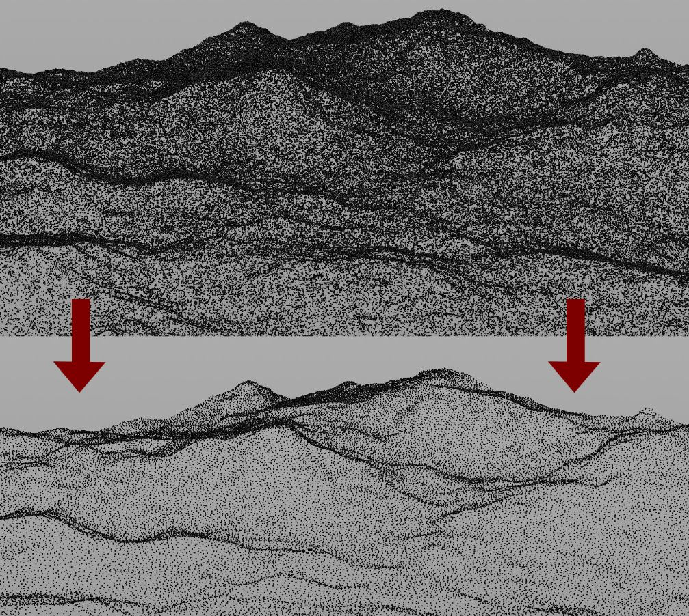
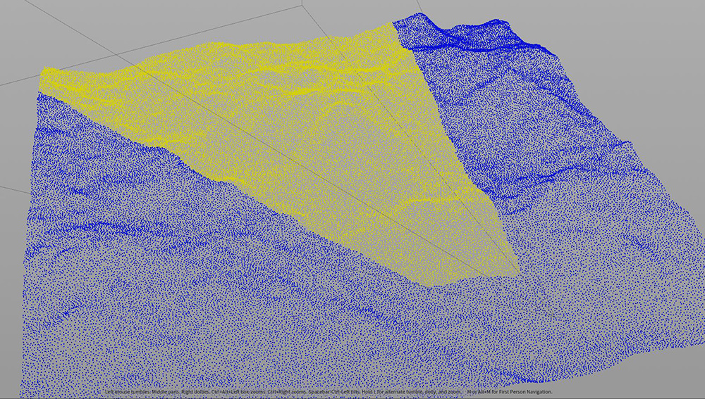
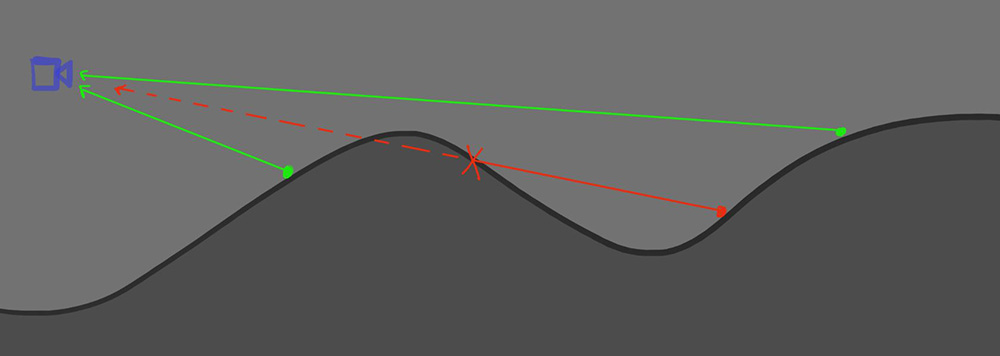
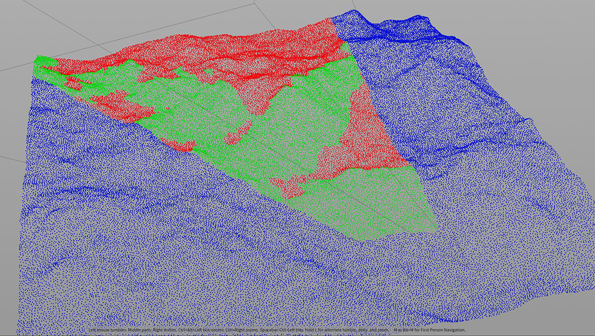
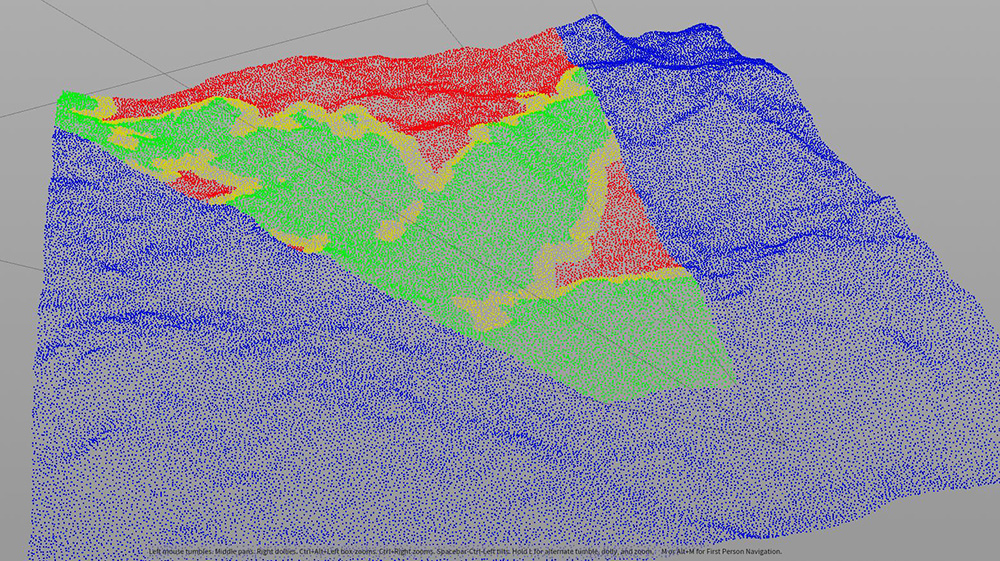
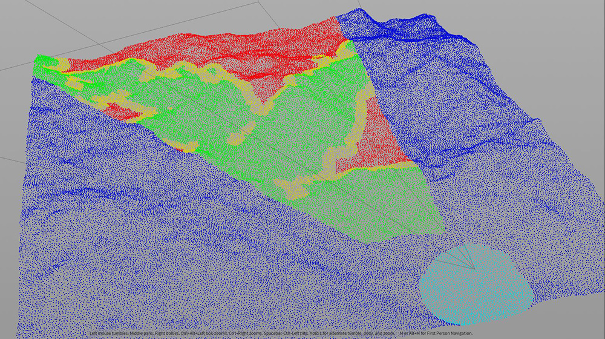
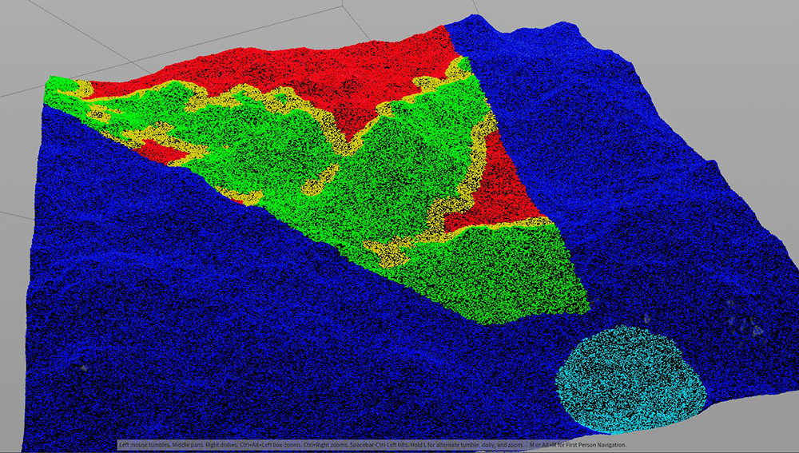
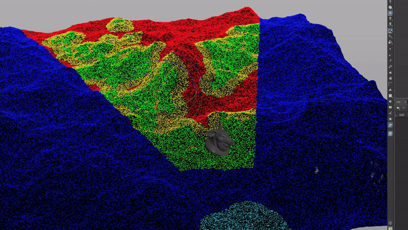
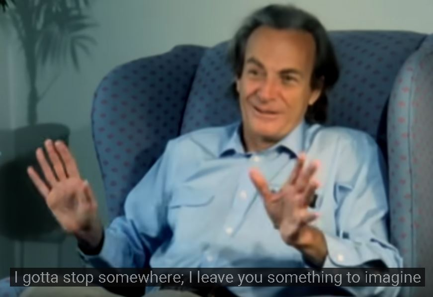

Optimizing Heavy Shots
A wide shot of a landscape can have millions and millions of instance points, a lot of which may not make it to the final pixel.
This is why I've developed this HDA in Houdini where it can calculate what points to keep and what instance points we can cull.
How does it work?
First, we need to simplify the instance points, we can make one point represent a cluster of points within X radius.This will speed up any calculation we'll do later.

We can optimize it further by just working with the points in the furstum, and yes we can extrude the frustum
to make sure we're not culling the points on the camera edge.

Now within the frustum let's find what point can be seen and what's being blocked.
How do we go about that?
One method is to shoot a ray from each point to the camera. If nothing blocks the ray, that means the camera can see it.


We can extend the visible map just for safty. It's best to keep more points than needed rather than culling points that shouldn't be culled.

We have the option to never cull a point if it's within X radius from the camera.

Now that we've computed what to keep and what to cull, we can transfer the computation result to the original dense points.

Let's see the result from the rendering camera. I'm also going to throw a large pig head there to see how much points behind it we can cull.

Nice! but what if the camera is moving?

What we can do here is keep the points if it is visible at any frame.
I've simplified a lot of what's actually been done in a production environment :)

You can download the houdini setup up I used here as an example:
Houdini File